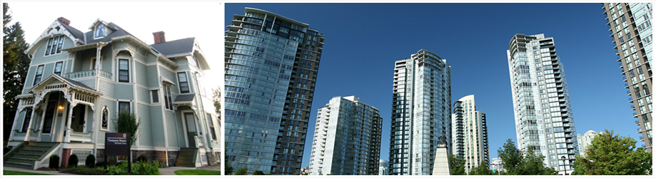

|  |
|
温哥华验屋/验房师 Victor范
|
Reliance Home Inspection
BC省政府註冊驗屋師/验房师范胜利，為大溫房屋提供最精准的診斷
一百万错漏保险以及一百万商业保险
细心才是驗屋師最重要的品質
驗屋是一件極其嚴肅認真的事情，所以本驗屋師:
- 無法在1-2個小時內完成house和townhouse的檢驗! （通常4--5個小時不含寫報告時間）
- 無法在驗屋完成後立刻出具驗屋報告! (因還要花2-3個小時寫報告將在12小時內遞交電子報告）
- 無法出具checklist格式驗屋報告! (將出具詳實報告所有問題均配有圖片說明便於與賣家交流協商而非簡單地在表格上打勾)
專業背景:
- BC省驗屋師註冊執照#55668 (British Columbia Licensed Home Inspector /License #55668);
- 加拿大BC省驗屋師協會BCIPI (British Columbia Institute of Property Inspectors)成員;
- 加拿大應用技術專家和技師協會(Applied Science Technologists and Technicians)會員;
- BCIT接受極其嚴格的專業驗屋師培訓課程;
- 建築和機械雙學士;
- 有豐富的中加建築設計和現場施工經驗
為了對截然不同的北美木結構建築有深刻的感性認識从而勝任驗屋之重責，本人曾經毅然辭掉設計工作，在溫哥華本地的建築裝修隊裏摸爬滾打了半年之久，將驗屋書本上的知識都變成了自己的切身體驗。明辨房屋是"病入膏肓“還是小小的”發燒感冒“，是房屋結構等嚴重問題還是失敗的裝修工藝問題。不誇大，不隱瞞，並同時提出解決意見。許多顧客因此避開了真正有問題的房子，同時也避免了因小失大的事情發生。
为了最大限度的减少买家的风险，配备了验屋行业最先进的仪器-德国红外热成像仪，可以使隐性漏水、墙体缺失保温棉等常规手段无法发现的问题无法遁形，最大限度的减少了买家的风险。

红外成像揭示屋顶缺失保温棉

红外成像揭示隐性漏水
華人買家一般非常關注固定電器(洗衣機、烘乾機、洗碗機、烤箱等)是否工作，但是BC省的註冊驗屋師均不要求對上述設備進行檢驗，另外沒有點燃引火火種(pilot)的Gas壁爐也不在驗屋範圍內，而對於危險的爬上屋頂檢驗(不被要求)，許多驗屋師由於年齡、體重等原因無法進行或不想進行，從而有可能漏掉許多屋頂上的重要細節，而一個很小的細節缺陷就可能導致屋頂漏水的嚴重後果。
驗屋師最重要的品質是細心，而細心往往是由責任心和愛心決定的。本驗屋師對買家的擔心感同身受，鄭重承諾:
- 固定電器洗衣機、烘乾機、洗碗機、烤箱均在本人驗屋範圍內;
- 沒有點燃引火火種pilot的壁爐(Gas)在本驗屋師驗屋範圍內;
- 除非坡度過大、極滑，均上屋頂檢驗
驗屋報告:
- 使用美國專業驗屋報告軟體HomeGauge出具驗屋報告(非checklist格式);
- 文字說明並配有彩色數碼照片;
- 指出問題及其性質和後果，並提出解決意見以供參考;
- 提供電子版驗屋報告（驗屋結束後6個小時內Email提交）；如果需要纸质报告需加收200加币，且仅限于metrotown提交。
執行標準:
- 嚴格執行加拿大BC省驗屋師協會(BCIPI)的行業標準;
- 恪守職業道德操守Code of Ethics;
- 配合多種專業檢驗儀器，進行長達3-4.5小時的極細緻檢驗(不含解說時間);
- 驗屋完畢後於現場配合電腦高清照片為您詳細解說房屋問題
高新設備:
- 验屋行业最先进仪器-德国红外热像仪，可以使隐性漏水、墙体缺失保温棉等常规手段无法发现的问题无法遁形;
- 配備最先進的美國BACHARACH高精度燃氣探測器;
- 英國UEI高精度一氧化碳探測器;
- 高精度紅外測溫儀;
- 非侵入式濕度測量儀等設備
付款方式:
- 驗屋費應在現場驗房結束時付清(不接受信用卡）;
- 需要發票時請事先聲明（稅款按稅收比例另收）
主要驗屋項目:
1. 室外部分:
外牆與門窗
露臺陽臺與室外臺階
步道車道，室外排水
室外水龍頭，電源，以及燈光照明，車庫
2. 屋頂及閣樓:
屋瓦，天窗，煙囪，屋面各類通風口
擋水板，排水系統(gutter&downspout)
屋頂/閣樓保溫與通風
3. 基礎結構系統:
基礎，地下室，半地下室
牆體，樓板，梁，柱(如果可見)
屋頂/閣樓結構
4. 內部作業系統:
給排水系統
供電系統
採暖/空調系統
5. 室內部分:
天花板，牆面，地面
室內樓梯，廁浴，壁爐
廚房及固定電器
 |